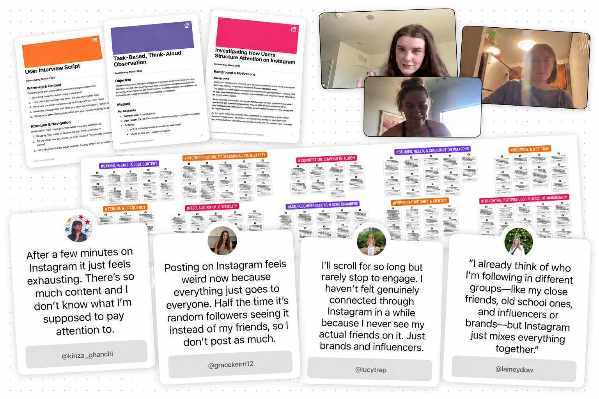
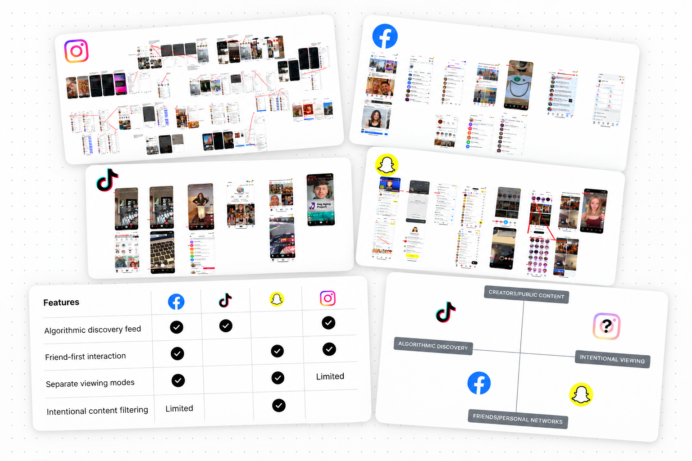
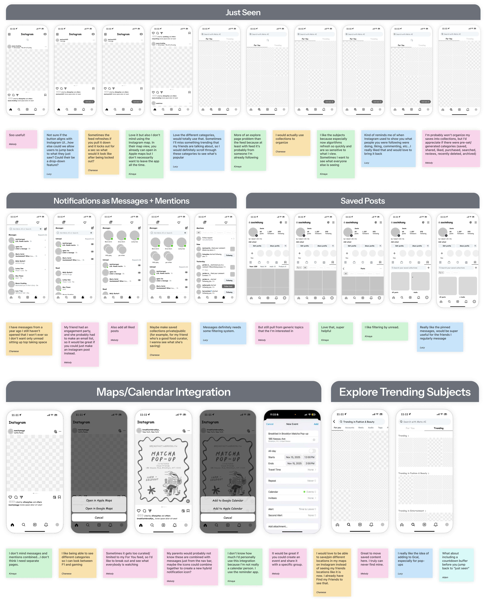
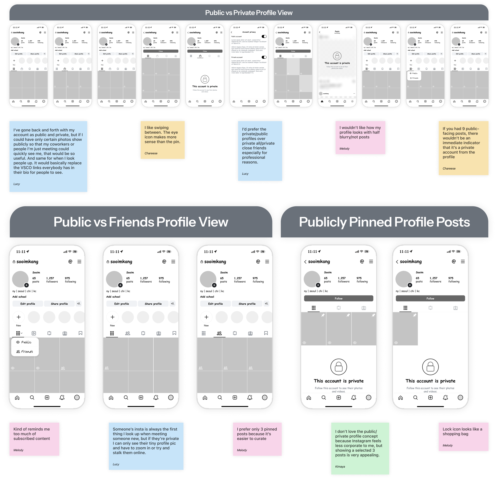
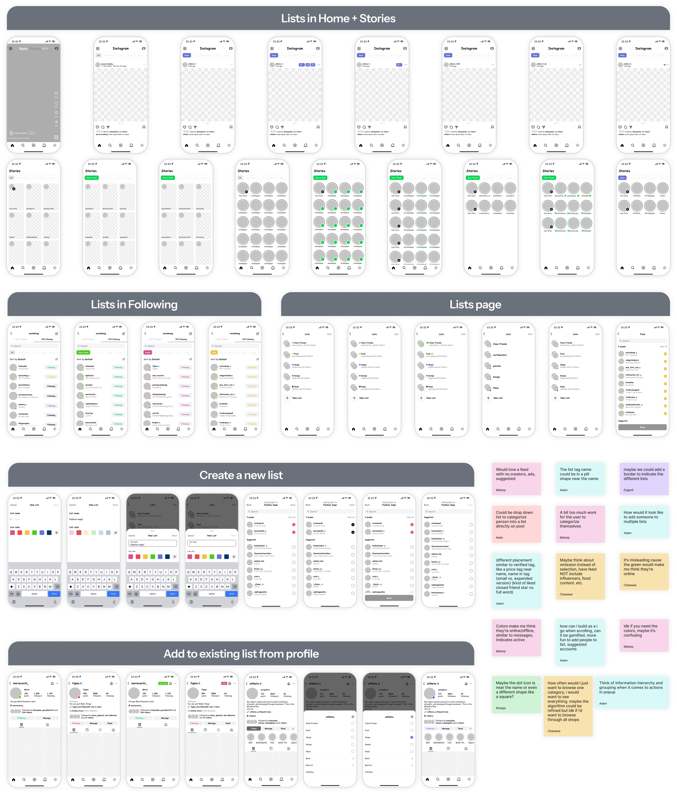

Instagram · Product design · Concept · 2025
Instagram Lists is a concept that lets people group who they follow and choose which group their feed shows first.
Problem
A single feed forces different relationships to compete for attention.
Friends, creators, brands, and communities share one ranking. People scroll for a long time without seeing the ones they meant to check on.
Solution
A new feed model: context before ranking.
People pick who they’re browsing for with a list. Instagram still ranks, just inside that list, and Home, Stories, and Following all follow the same choice.
Research
Algorithms can predict relevance, not intent.
People already sort who they follow into groups in their heads. What’s missing is a way to say who matters right now.
The problem wasn’t volume. It was retrieval: people were missing the ones they meant to see.


The deeper problem
The feed optimizes for consuming content, not for rediscovering the accounts behind it.
Friends, creators, brands, and communities rank together even though they serve different goals.
Core flows
Lists live inside browsing, not beside it.
Creating, switching, and editing a list had to feel like browsing, so every flow cuts setup and keeps the context visible.
01 · Defaults
Users start with Default Lists.
All, Following, and Close Friends work right away, with nothing to organize first.
02 · Extend
Users can then extend this system into their own relationships.
Their own lists sit beside the defaults in Home and Following, and work the same way.
03 · Create
Creation happens where intent emerges.
A new list is made in the moment it’s needed and shows up in Home right away.
04 · Edit
Editing happens where intent already exists.
Add or move someone from a post, a story, a profile, or the list itself. Upkeep stays light, not administrative.
Design decisions
The risks I designed around.
Lists stays in the main rail, remembers the active list, and edits in place, so it reads as a way of browsing, not a settings chore.
Iterations
Three directions, tested with real people. Only one fixed the root problem.
Navigation and profile ideas improved control, not priority. Only organizing who you follow changed what the ranking receives.



System
Designed as a system, not a feature.
Lists adds no new destination. One context state shapes Home, Stories, profiles, and Following at once.
Visuals
Lists looks like it always belonged in Instagram.
No new visual language: icons extend Close Friends, and list pills sit where the verified tag already does.
Reflection
If validated, Lists reshapes more than the feed.
It works if switching lists becomes a habit, not a one-time setup. I’d measure engagement inside chosen lists, how often people switch and reuse them, and whether discovery holds up outside them.
I moved from improving feed screens to restructuring the priority underneath them.
Takeaway
Relevance only works once the right context is defined.